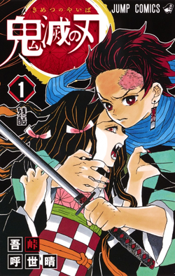
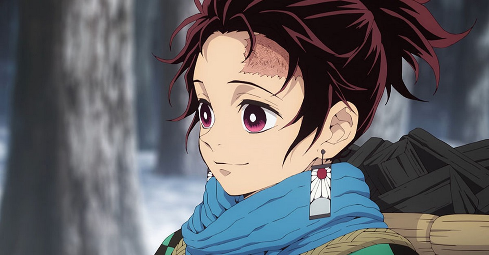
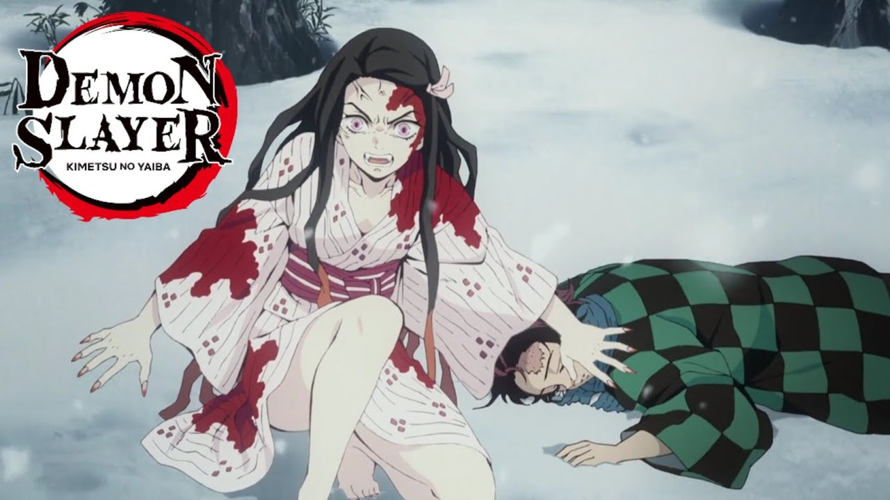
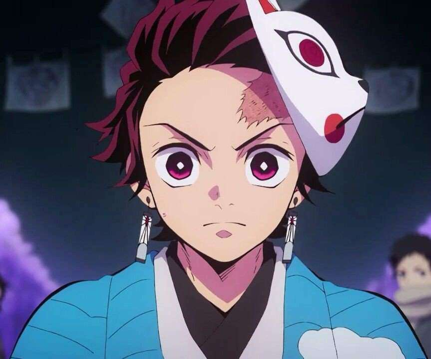

Demon Slayer, Kimetsu no Yaiba: Como tudo começou?
Kimetsu no Yaiba (鬼滅きめつの刃やいば , Kimetsu no Yaiba, lit. Lâmina (刃)Lâmina de Destruição (滅)Destruição de Onis (鬼)Onis), também conhecido pelo título em língua inglesa Demon Slayer (Matador de Demônios, em português) é uma série japonesa de mangá shōnen escrita e ilustrada por Koyoharu Gotōge.

O mangá é serializado desde 15 de fevereiro de 2016 e foi encerrado em 18 de maio de 2020 na revista semanal Weekly Shōnen Jump, com seus capítulos sendo reunidos em 23 volumes tankōbon pela editora Shueisha.
Em setembro de 2019, foi divulgado que todos os volumes juntos da série já tinham excedido mais de 10 milhões de cópias vendidas.[3] Em dezembro de 2019, o mangá já contava com mais de 25 milhões de cópias em circulação.[4][5]
Kimetsu no Yaiba: Adaptação para anime;
Uma adaptação de um mangá para um anime de 26 episódios, produzida pelo estúdio ufotable, foi exibida na 1° temporada entre 6 de abril e 28 de setembro de 2019.[1] A 2ª Temporada, produzida pelo estúdio ufotable, foi exibida entre 10 de outubro de 2021 até 13 de fevereeiro de 2022. [2]
Kimetsu no Yaiba: Historia principal
Ambientada no Japão durante o Período Taishō (1912-1926), a história gira ao entorno de Tanjirō Kamado, um garoto bondoso e inteligente que vive junto com sua mãe e seus irmãos, ganhando dinheiro vendendo carvão, assim como seu falecido pai.

Certo dia, ao voltar para casa após ter ido a uma cidade vender carvão, Tanjiro descobre que toda sua família foi atacada por onis, sendo que uma de suas irmãs, Nezuko, é a única que sobreviveu ao ataque. Nezuko então passa a ser um oni, mas ela surpreendentemente ainda demonstra sinais de emoções e pensamentos humanos.

Esta atidude de Nezuko se dá ao instinto de proteger seu irmão Tanjiro de Tomioka, no qual estava tentando matar Nezuko, que por sua vez era uma Oni.
Tanjirō decide então se tornar um caçador de onis, e com a ajuda de Nezuko, passa a sair em jornadas pelo Japão a fim de impedir que a mesma tragédia que afetou sua família aconteça com outras pessoas, enquanto que ele busca uma maneira de tornar Nezuko humana novamente.

Treinado por Sakonji Urokodaki, Tanjiro se torna um caçador de Onis utilizando a respiração da agua, mas ao decorrer da história Tanjiro começa a utilizar a técnica ancestral da sua família: O Hinokami Kagura (Dança do deus do Sol), e mais avante na história combina os dois estilos de Respiração, tornando-a mais eficiênte e menos cansativa.
Veja as informações sobre os personagens clicando em personagens